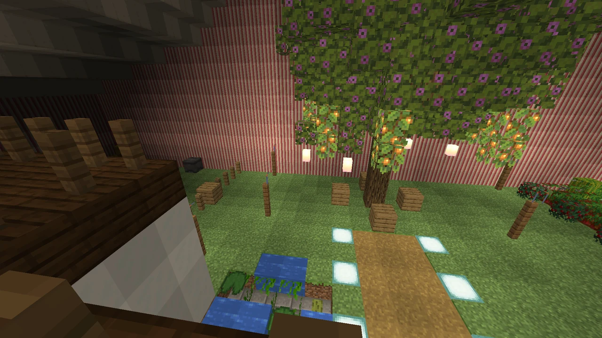
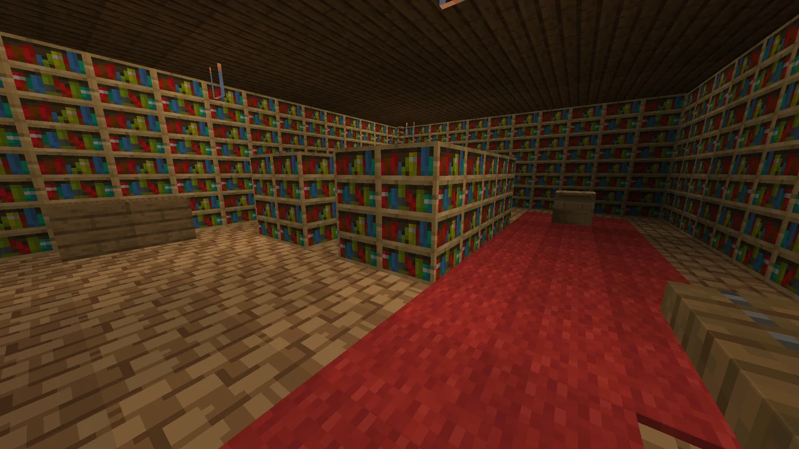
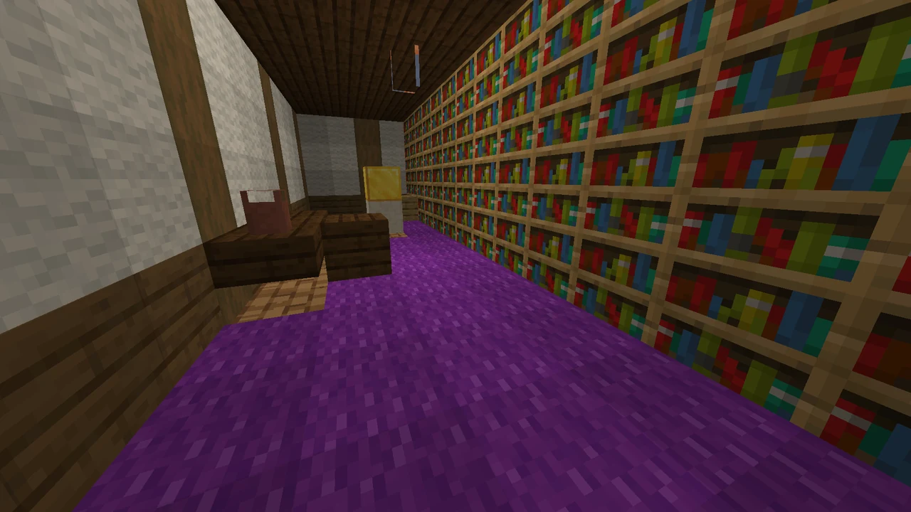
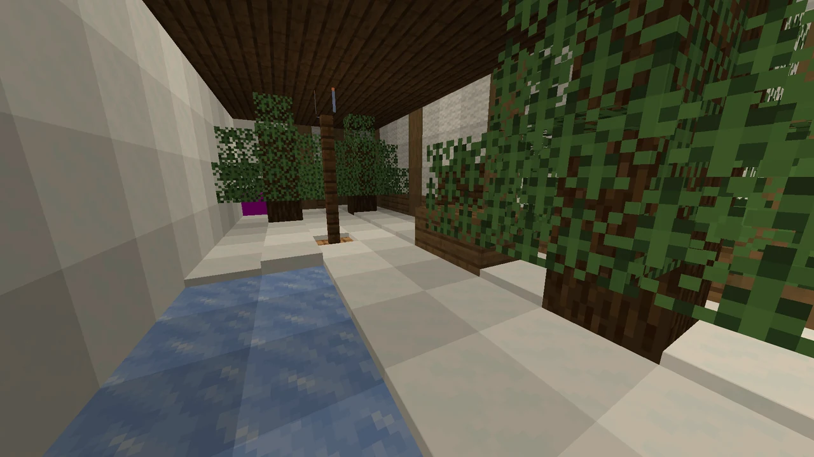
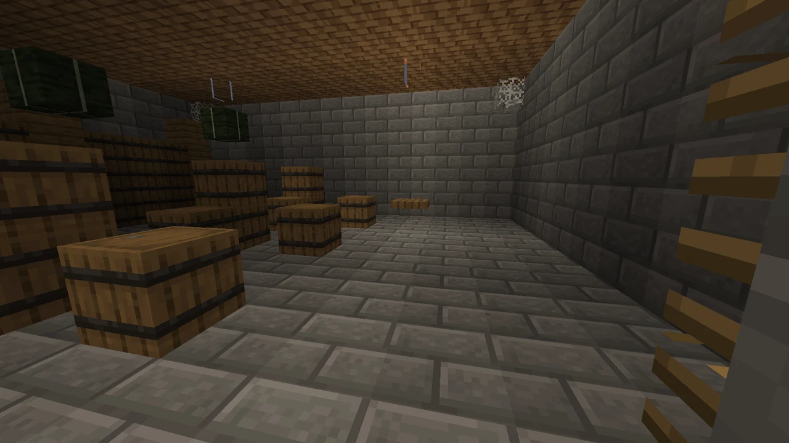
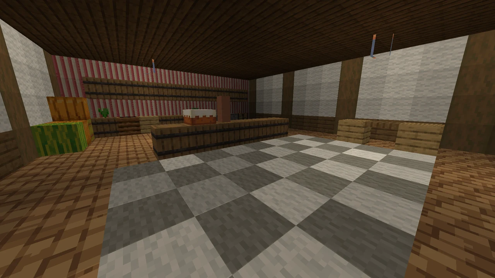
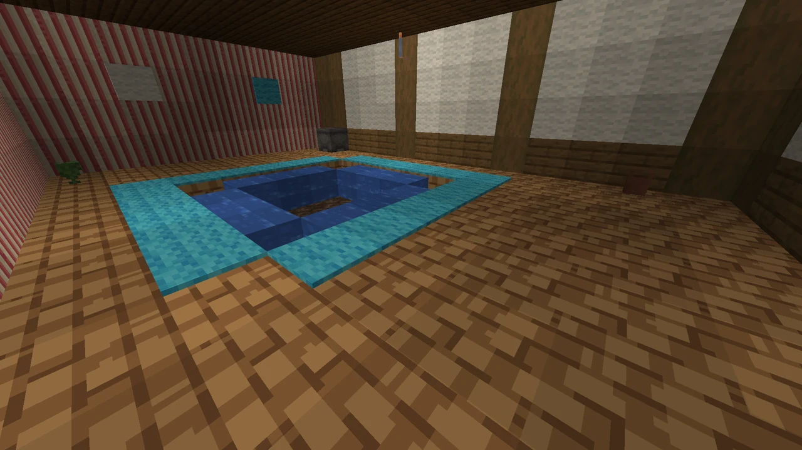
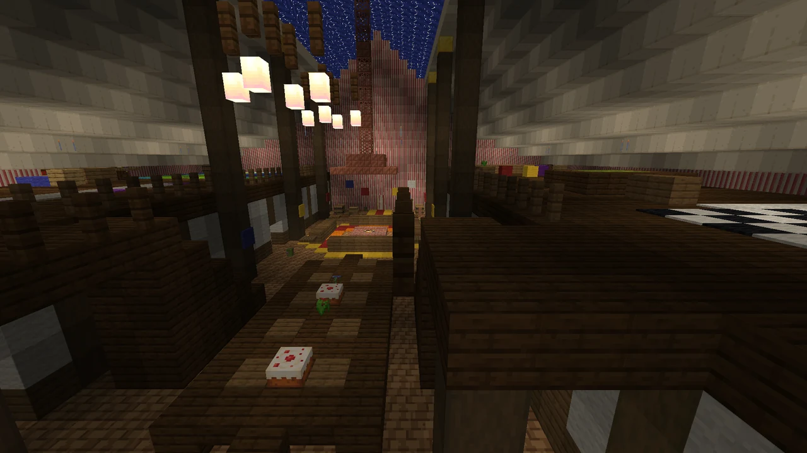
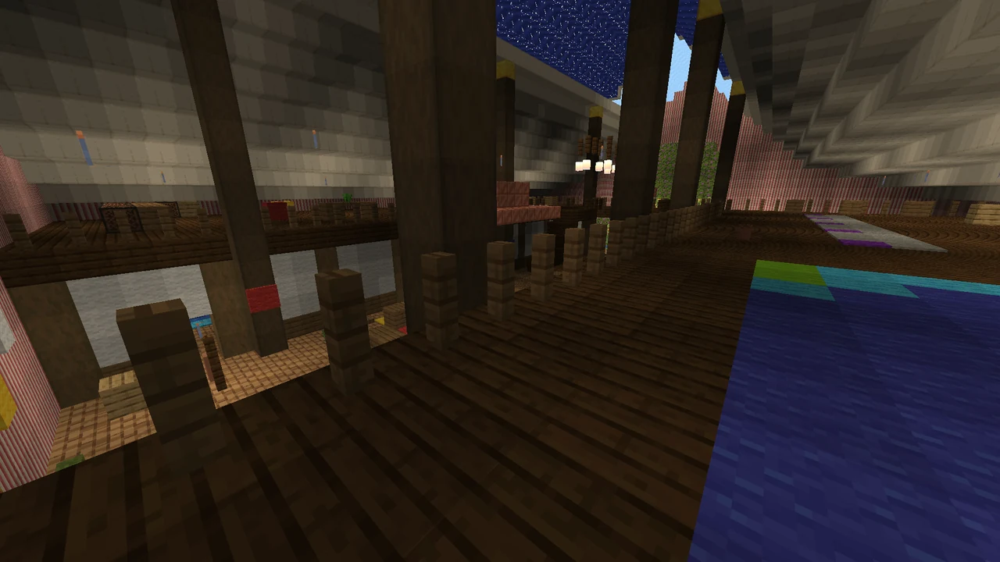

Création
La Tente enchantée
La treizième création : une tente rayée de trois blocs sur trois qui s'ouvre sur une demeure de quarante-cinq blocs sur cinquante-deux, sur trois niveaux, sous une voûte de vingt-deux blocs de haut. Plus grande dedans que dehors - beaucoup plus. Elle naît de la Bobine Sans Fin, légendaire des Arcanes (bannière Atelier).
 (agrandir l'image)
(agrandir l'image) (agrandir l'image)
(agrandir l'image) (agrandir l'image)
(agrandir l'image)

(agrandir l'image)La planter, y entrer, la replier
- Clic droit au sol, la tente en main : elle se plante devant vous, son rabat de votre côté. Il lui faut 3 × 3 blocs de sol ferme et 2 blocs d'air au-dessus.
- On voit dedans. L'entrée de la tente est une fenêtre : approchez-vous et vous voyez, par son arche, la grande salle qui s'étend loin derrière - bien plus loin que la tente n'est profonde. De l'intérieur, le rabat au bout de la salle montre le dehors, tel qu'il est autour de la tente, avec son ciel. Ce qu'on voit est tenu à jour : posez un bloc dedans, il apparaît à travers l'entrée.
- Entrez en marchant : passez l'arche, et vous êtes dedans, au même endroit de l'ouverture, tourné du même côté - pas de clic, pas d'écran de chargement. Pour sortir, repassez le rabat : vous voilà dehors, devant la tente. Un clic droit fait la même chose.
- Accroupi + clic droit : la tente se replie et revient dans votre inventaire. Ceux qui étaient dedans sont mis dehors d'abord.
- L'intérieur vit dans la dimension des tentes, chacune à sa place : rien là où la tente est plantée n'est jamais touché. La tente garde son numéro (sa description l'affiche) : repliée puis replantée - ici, dans le Nether, sur une planète… -, elle s'ouvre sur le même intérieur, avec tout ce qu'on y a laissé.
- Elle ne se casse pas : c'est en la repliant qu'on la récupère. Une tente ne se plante pas dans une tente.
L'intérieur
Construit à la première visite, puis gardé tel que vous le laissez. Le long du milieu court la nef, sous une voûte de nuit enchantée où brillent les étoiles : le salon autour d'un foyer sous sa hotte de cuivre dont le conduit monte jusqu'aux étoiles, la grande table du banquet sous deux lustres (avec son gâteau aux bougies), deux escaliers vers les galeries et un pont qui traverse la nef, un télescope de laiton pointé vers la voûte.
- À gauche : la réserve (tonneaux et coffres), la cuisine (four, fumoir, haut fourneau, évier, garde-manger) et l'atelier avec sa forge à lave, son enclume et toutes les tables d'artisan : meule, tailleur de pierre, table de forgeron, métier à tisser, table d'archerie, table de cartographie.
- Sous la cuisine, par une trappe et une échelle : la cave, ses tonneaux en rayonnages, son grand fût, son puits, et au bout un laboratoire d'alchimie - trois alambics, des chaudrons, de la verrue du Nether qui pousse sur le sable des âmes.
- À droite : un bain creusé dans le plancher qui bouillonne, la bibliothèque et sa table d'enchantement entourée de ses rayonnages (assez pour les enchantements les plus forts), la chambre et son lit à baldaquin… et ce que la tente ne montre pas d'elle-même.
- Au-dessus des pièces, les combles : la salle des cartes avec le monde en tapis, un dortoir de quatre lits, un salon de musique avec son juke-box, une caisse de disques et un piano dont les touches jouent une gamme, une salle de jeux (billard, cible de fléchettes et son arc, échiquier et ses pièces), des fauteuils sur un balcon au-dessus du jardin.
- Au fond, sous un ciel de printemps lumineux : le jardin. Un grand arbre en fleurs où pendent des lanternes des fées et des baies lumineuses qui se cueillent, du blé, des carottes, des pommes de terre et des betteraves autour d'un canal éclairé, des baies sucrées, une citrouille et un melon, un épouvantail, un étang, des fleurs et une ruche avec ses abeilles, un enclos avec deux moutons, une vache et des poules.
À découvrir : sept lettres d'Ombeline, la couturière qui a cousu la tente, sont cachées un peu partout, chacune disant où trouver la suivante. La première attend sur un lutrin de la bibliothèque. Elles mènent à des pièces qu'aucune porte n'annonce, et à un coffre qui vous attendait. Un livre d'or, à l'entrée, attend aussi votre mot.
Les murs, le toit, le plancher, la pierre de la cave et la terre du jardin reposent sur la toile et la pierre de la tente : rien ne les casse, on ne s'en échappe pas. Tout le reste se déplace, se casse et se remplace : c'est votre maison. Un chat vit près du foyer, un perroquet dans l'arbre, un axolotl dans l'étang. Les monstres n'y apparaissent jamais ; les lits sont pour le décor (on dort dehors).
Une tente plantée avant la 0.10.0 se recoud d'elle-même avec ce nouvel intérieur : tout ce qu'elle contenait - le contenu de ses coffres, et chaque bloc que vous y aviez posé - vous attend dans le coffre et les tonneaux près du rabat.
Toute la galerie 8 images de plus


(agrandir l'image)

(agrandir l'image)

(agrandir l'image)

(agrandir l'image)

(agrandir l'image)

(agrandir l'image)

(agrandir l'image)

(agrandir l'image)